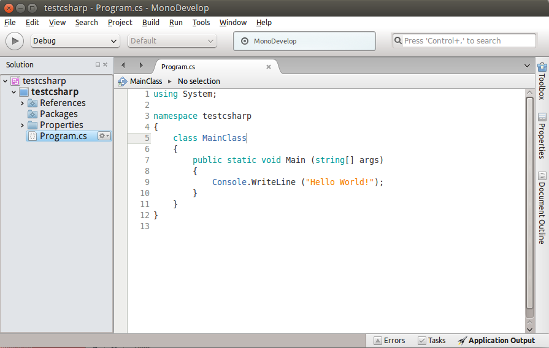
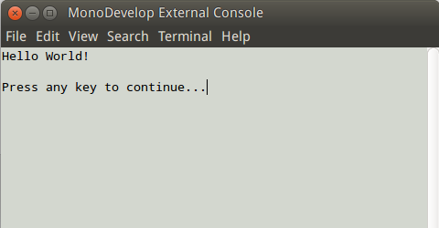

Install MonoDevelop on Ubuntu
MonoDevelop不但可以用来写.Net程序，也可以用作C++的IDE，只是ubuntu软件中心的monodevelop版本非常陈旧，因此我们需要自己手动来安装(我使用的是 Ubuntu 14.04 LTS, 安装之后的 monodevelop 版本为 5.10)。
PPA
我们首先尝试使用ppa安装，MonoDevelop PPA，在PPA页面搜索monodevelop，找到stable release版本，通过terminal安装得到提示：该PPA已不再支持:(
via Official Site
因此我们推荐按照官方安装流程，即：Official Guide 按照流程：
- 依次完成 Add the Mono Project GPG signing key and the package repository, enable mod_mono installation, enable libgdiplus installation 这三个部分。
- 转到该页面 Usage 部分，安装 mono-devel. 可能会因为一些依赖的 package 无法安装而失败。通过 synaptic 安装需要的各个 package 发现失败原因是 ubuntu 不提供 >= 1.31 版本的 libjpeg62-turbo 包。
解决方法： 直接去 Debian 网站下载最新版的 .deb 文件（已提供 1.4.1版本）安装: https://packages.debian.org/sid/libjpeg62-turbo, x64 系统选择 amd64 链接下载即可。
-
完成上面这些只是安装了 mono 框架。接着安装 monodevelop 程序：http://www.monodevelop.com/download/linux/ 这里主要安装 monodevelop, 其它的如 monodevelop-nunit 等组件可视情况安装。
-
安装完成后，terminal 中输入 monodevelop 运行，创建一个 hello world 的 C# 程序，验证安装成功。附程序界面和运行截图：


Comments
Comments powered by Disqus